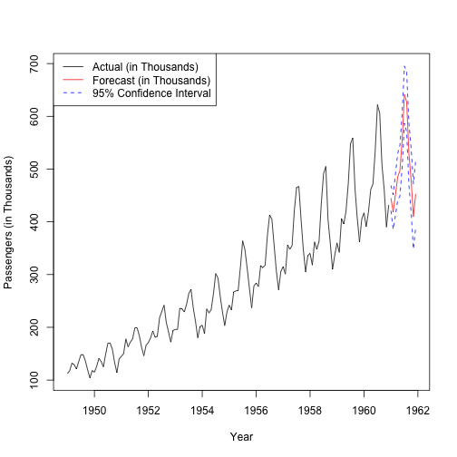

Analyse the Airline traffic trend to get an insight of the traffic trend
Forecast Airline traffic so that Aitline can plan ahead to serve customers better
Help Airlines to optimize their operations when a high or a low traffic is forecasted
Sudhir Tiwari
Software Developer
Analyse the Airline traffic trend to get an insight of the traffic trend
Forecast Airline traffic so that Aitline can plan ahead to serve customers better
Help Airlines to optimize their operations when a high or a low traffic is forecasted
Analysis has been performed on the training set data from the Box & Jenkins airline monthly traffic.
Data has been observed for the period 1949 to 1960.
Prediction model is based on AutoRegressive Integrated Moving Average (ARIMA) model
Here is the observed trend of the Airline traffic for the period 1949 to 1960, with traffic forecast for next 1 year (1960 - 1961)

A web application has been created and deployed here
The web application enables users to select the specific period to find the observed traffic trend.
It has option to specify the forecast period. Users can get the forecast upto 5 years from the end of observed period.